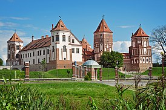

В средние века на территории нынешкей Беларуси располагались десятки рыцарских замков. Но сожалению, до наших дней сохранились лишь единицы. От некоторых остались поражающие воображение руины.
И только два замка дают возможность увидеть воочию средневековые цитадели Мирский и Несвижский замки. Их соединяет многое: общая история, владельцы, легенды
Мирский замон -это уникальный памятник архитектуры, в конструкции и декоративном убранстве которого, прослеживаются элементы европейских стилей: готики, ренессанса и барокко. Впечатляют стены замка, их высота составляет 13 метров, а ширина доходит до 3 метров, соединенные в угловыми многоярусными бешняии, Пятая центральная въездная башня, расположенная в середине западной стены, достигает в высоту 25 метров и делится на 6 прусов.